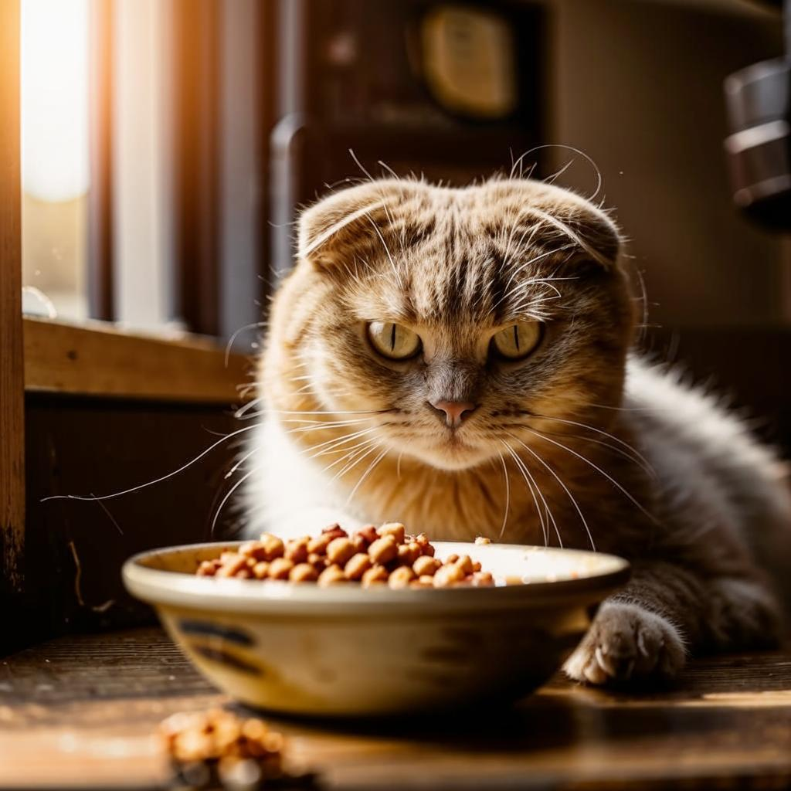
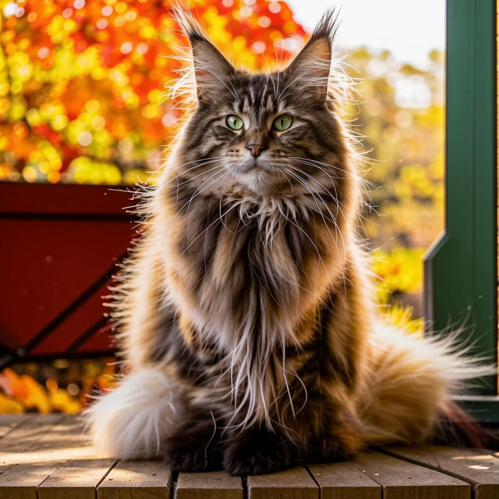

Факт 1
Мейн Кун-одна из самых крупных пород домашних кошек, родом из США, отличающаяся дружелюбным характером, интеллектом.

Мейн-куны легко обучаются, могут приносить игрушки (апорт), сопровождают хозяев по дому и, как правило, не боятся воды.

Живут около 12–15 лет, но склонны к генетическим заболеваниям сердца (кардиомиопатия) и суставов (дисплазия).